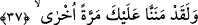

Padişah Süleyman, veziri de Âsaf oldu mu
Nur üstüne nurdur, amber üstüne amber!
Fakat padişah Fir’avn, veziri de Hâmân olursa
İkisi de talihsizlikten, kaçamaz; perişan olur giderler!
Karanlıklar üstüne çöken karanlıklara düşerler de
Ne akıl onlara yâr olur, ne de kıyamet günü devlete erişirler!
Cüz’î aklı kendine vezir yapma.
Küllî aklı vezir yap padişahım.
Hevânı kendine vezir yapma da
Pâk canın namazdan, niyazdan kalmasın.
Çünkü bu hevâ, hırslarla doludur ve şimdiki hali görür...
Aklın düşüncesi ise din gününün düşüncesidir.
Bir hadiste şöyle buyrulmuştur: “Tebeasında daha iyisi varken başka bir insana
görev veren kimse Allâh’a, Rasûlü’ne ve mü’minler topluluğuna ihânet etmiştir.”[75]
Şeyh Sa’dî (k.s.) da şöyle der:
Bir kimseye ki senin efendinle cenktedir
Onun eline niçin ağaç ve taş verirsin?
Başkasının köpeğine neden sofra kursun uşaklar
Emret onlara ki onun önüne kemik koysunlar
Eziyet veren kimseye mal ve nimet ile mükâfât verme
Çünkü öyle kimsenin kökünü yukarı getirmek gerektir
Kurdun başını önceden koparmak gerektir
Yoksa insanların koyunlarını parçaladıktan sonra değil
37. Andolsun biz sana bir defa daha lütufta bulunmuştuk.
“Andolsun biz sana bir defa daha lütufta bulunmuştuk.” Burada “ ifâdesi,
nimet verdik ve lütufta bulunduk mânâsındadır. Bu kelimenin diğer bir mânâsı olan
minnet/başa kakmak anlamında değildir. Çünkü minnet yapılan iyiliği mahveder.
Tefsir-i Kebir’de şöyle der: “Eğer “Bu nimetlerin “minnet” lâfzı ile ifâdesi, eziyet
vericidir. Oysa makam lütufta bulunma makamıdır.” denilirse, şöyle cevap veririz:
Allah Teâlâ, Mûsâ (a.s.)’a verdiği nimetlerin yalnızca kendi kerem ve lütfundan
olduğunu, yoksa onun bunları hakk ettiği için verilmediğini bildirmektedir. Yâni ey
Mûsâ Allâh’a yemin olsun ki biz sana sen bizden istemeksizin nimet verdik ve birçok
ikramlarda bulunduk.
“Bir defa daha” sözünden maksad, daha önce geçmiş günlerde, bu vakit dışında lütuf